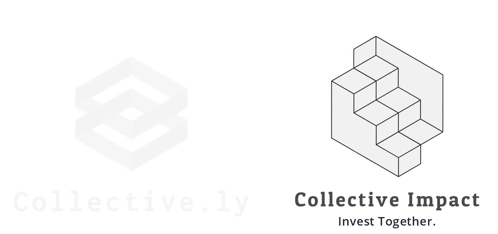

try messing around with the ESC, F, ?, and ↓/↑ keys
these are some of the functions that come with this presentation. slide page numbers are represented in the bottom right corner.
this presentation has "basement" levels. the menu toolbar above serves as a table of contents. enjoy!
(sorry for the bugs. if anything here does not properly render, please click to here to refresh your browser.)
Overview of Thesis Proposal

Case Studies: The Rise/Fall of Various Social Investment Marketplaces
Current State of Program Related Investments and Guarantees
Social Entrepreneurship Thesis: Pooling Guarantees to Underwrite an Impact Investing Marketplace
Graduate Education & Training Timeline
(sorry for the bugs, there's supposed to be a pretty timeline. if it does not properly render *looks like crap*, please click to here to refresh your browser.)
Research and Readings
erlenbusch@mac.com
linked.in